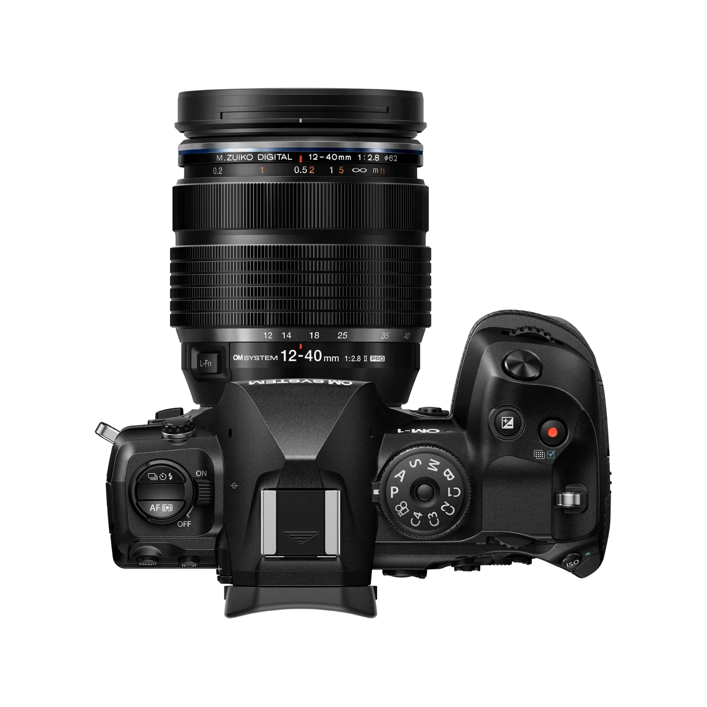
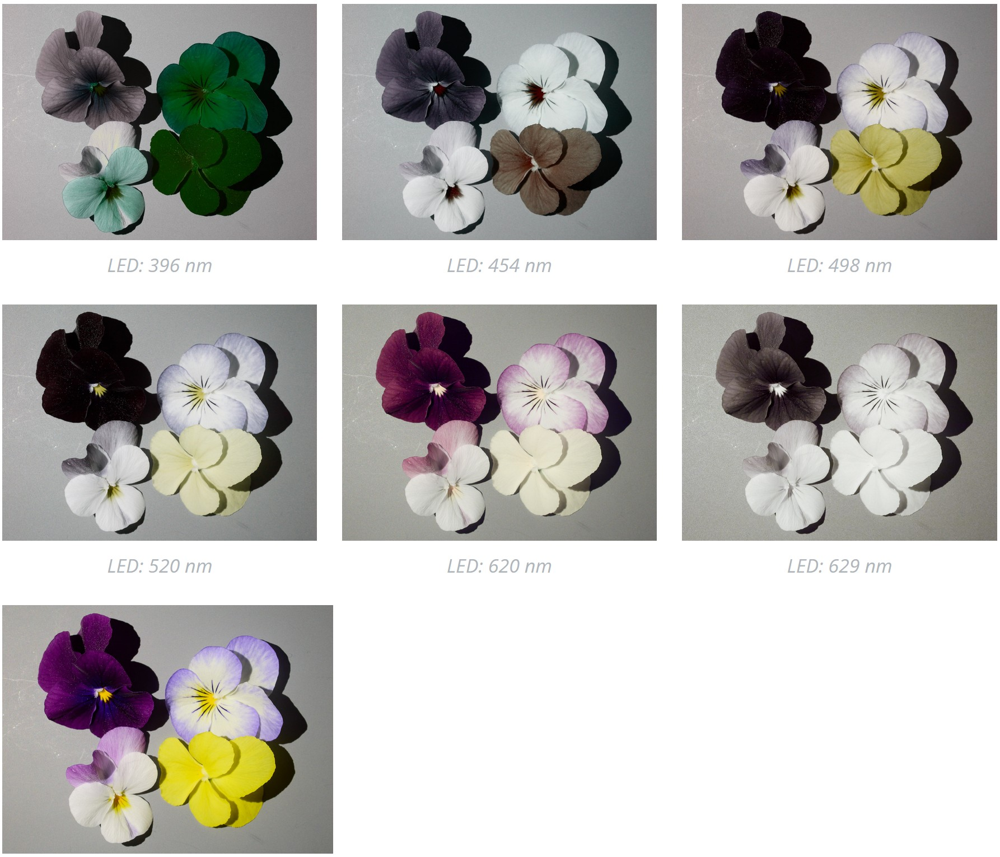
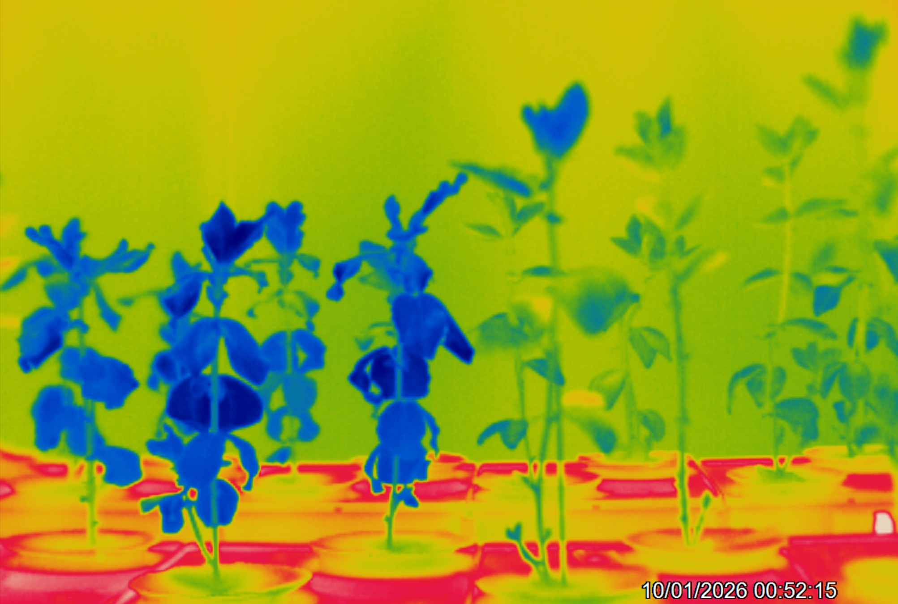
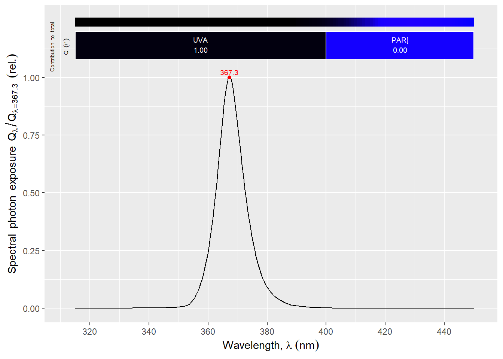
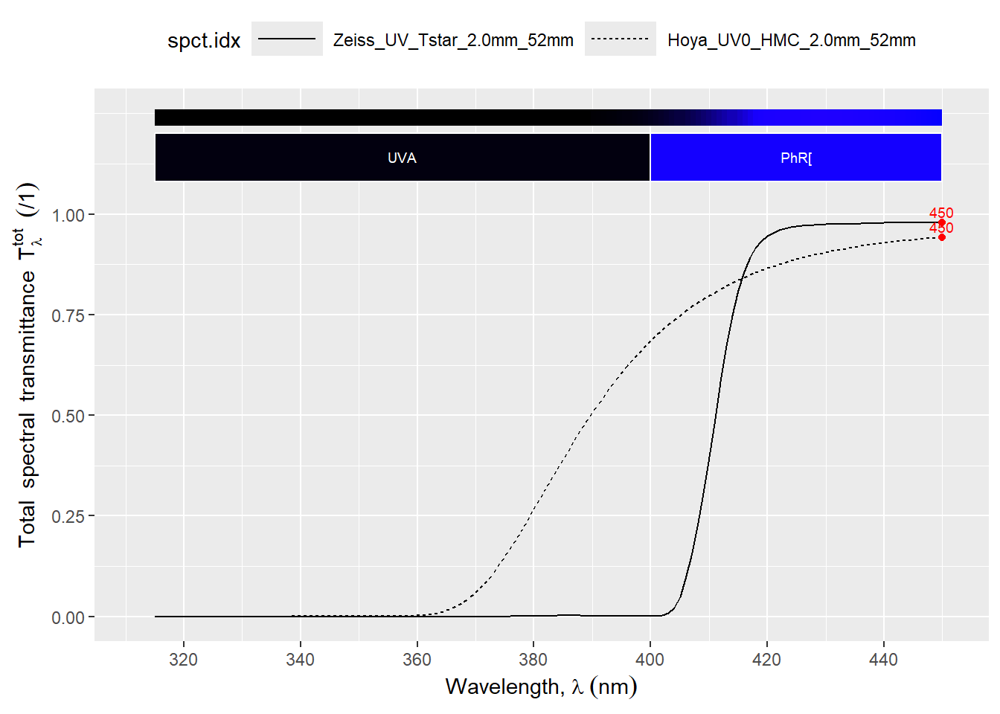
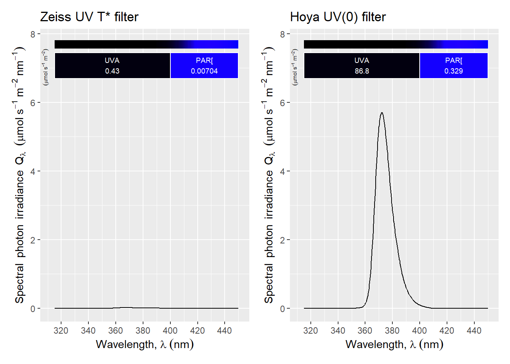

Code
library(ggspectra)
library(photobiologyFilters)
library(photobiologyLamps)
library(photobiologyLEDs)
library(photobiologyPlants)
library(patchwork)
photon_as_default()
Tfr_as_default()
set_theme(theme_bw())Equipment and methods
library(ggspectra)
library(photobiologyFilters)
library(photobiologyLamps)
library(photobiologyLEDs)
library(photobiologyPlants)
library(patchwork)
photon_as_default()
Tfr_as_default()
set_theme(theme_bw())With some exceptions, producing photographic images, either photo-electronically or photo-chemically, requires a camera, a lens and a light source. To limit the imaging to specific regions of the spectrum, optical filters are used. Illumination can be sunlight or artificial. If artificial it can have a broad spectrum or be limited to a specific range of wavelengths.
Most frequently, landscape and other types of low magnification and even macro photography are based on reflected light. In microscopy it is common to image the light transmited through a specimen. Imaging of fluorescence is also used in the plant sciences in relation to photosyntheis and other pigments, and in microscopy. In this chapter, we exclude high magnification microscopy, and concern with photography at magnifications of less than \times 5.
Black and white (grey scale) images contain only brightness information, which can be intuitively mapped also in images obtained at wavelengths invisible to humans. In contrast, colour photographs are intuitively expected to represent colours as seen by humans. When mapping wavelengths invisible to us into colours, the choice of mapping stops being obvious, and different more or less arbitrary mappings can be used. In some cases, the mapping is just accidental, as a consequence of the properties of the R, G, and B filters of image sensors in the UV or NIR regions, wavelengths not taken into account in their design.
This chapter is structured in sections describing cameras, lenses, filters, light sources and accesories. Image editing and special techniques based on image merging are discussed next. These sections are followed by a description of example setups and procedures for UV, VIS, and NIR imaging, fluorescence imaging, as well as macro photography. A whole book could be written on the subject but this chapter intends to be an introduction to imaging methods of special interest to photobiologists.
It is usual to call cameras with interchangeable lenses “system cameras” and those with a lens permanently afixed, usually smaller in size and with no or with limited or akward to use manual settings “point-and-shoot” cameras. There are some cameras that do do not fit into these two categories, e.g., with full manual controls and relatively large sensors with no possibility to change lenses. Cameras in these different categories can be useful in scientific research, but not interchangeably. Their advantages and disadvantages determine their suitability. Even smart phone cameras, can occasionally be useful for more than “visual note taking” Figure 9.1.


Digital cameras sold for amateur and professional photography are self contained: all controls, viewfinder and/or live-view screen, image review and image data storage all take place in-camera. Modern cameras are also capable of complex image processing. These cameras are primarily battery powered althougn some can be in addition powered externally. Most cameras for ordinary photography are designed for imaging reflected visible light. In a few cases, manufacturers have offered versions of these cameras for use in forensics or astronomy, with extended wavelength range (e.g., OM-3 ASTRO Mirrorless Camera, OM-System).
Normal photographic cameras aim at producing images that depict a scene as seen by humans, and, thus, are most sensitive to the central wavelengths of visible light (\approx 410-680 nm). When producing colour images, image sensors with three colour channels are used, with each channel’s colour response designed to approximately mimic the spectral sensitivity of one of the three photoreceptors participating in human day-time vision. This tight link to human vision also applies to the implementations of colour film, video, TV and computer monitors. Colour printing is more complex as inks are in most cases opaque making their effect on reflection non-additive, but printing also exploits the “deficiencies” of our eyes to trick us into seeing colours.
In the case of monochrome or greyscale (= black and white, BW) photographic films used for everyday photography and the very few monochrome digital photographic cameras available, the images produced aim at depicting the brightness of an scene as seen by humans. In other words, normal photographic and video cameras are designed to work as proxies for human three-chromic vision, not as spectrometers.
Most digital photography cameras capture colour images and have sensors with red, green and blue filters on individual pixels. Monochrome cameras have sensors lacking such filters. So each pixels in the sensor receives more photons. In addition, the lack of filters makes raw image processing straightforward with all individual pixels providing equivalent data. This results in a higher apparent spatial resolution and higher dynamic range. Currently, there are four monochromatic (or greyscale) digital photographic cameras available: Leica M11 Monochrom, Leica Q3 Monochrom, Leica Q2 Monochrom and Pentax K-3 Mark III Monochrome. A monochrome point-and-shoot camera has been announced by Ricoh.
Image sensors are two-dimensional arrays of photodetectors. The main determinant of the native wavelength sensitivity is the material used. Most VIS (really 320 to 1000 nm) sensors are made of silicon (Si) using CMOS or CCD approaches. The size of individual photosites and the speed of their readout varies. There is normally a compromise between the number pixels (amount of data to be acquired) and the speed of image acquisition measured in frames per second (fps). The whole sensor array in constructed by etching and deposition similarly to how electronic integrated ciscuits are made. The wavelength range can be constrained with optical filters, on individual photosites, small groups of photosites, or the whole image sensor.
The sensors used in photographic cammeras are natively sensitive to wavelengths in the range \approx 330-1100 nm and the R, G and B filters, do transmit outside the VIS range. At both ends of this range, sensitivity (\approx quantum yield) decreases very gradually. In photographic cameras, the wavelength range is constrained by an optical UV and IR cut filter attached to the front of the whole sensor assembly to create a wavelength response closer to that of human vision. Depending on the camera, the shortest wavelengths that are detected by the sensor plus filter combined vary between 370 nm and 420 nm, and the longest ones between 680 nm and 730 nm. The filters used are frequently absoptive ionic and the cut-in and cut-off, specialy at the NIR end, is gradual, i.e., in most digital photography cameras it is possible to use a 720 nm long-pass filter to take images in the NIR but only by increasing exposure by orders of magnitude.
It is possible to convert cameras to “full spectrum” (meaning the native sensitivity of the sensor with its R, G and B filters) by replacing the sensor filter with quartz glass or a long-pass filter with a suitable cut-in, such as at 280 nm. In a “full spectrum” converted camera additional filters can be used in front or behind the lens to restrict the wavelength range as needed. Alternatively a camera can be modified to be constitutively sensitive to a especific range of wavelengths installing a wavelength-selective filter onto the sensor.
Conversion involves disassembling the camera but is relatively simple, and costs between 200 € and 500 € depending on the camera model and who does the conversion. In a “full spectrum” or “filter” conversion, the sensor itself in not modified, and the RGB filters remain on the sensors pixels. Several companies, both is the USA and in Europe do conversions, but not all of them are equally reliable.
The conversion of a colour camera into a monochrome camera is much more difficult and there is a risk of damaging the sensor making it unusable, as it involves the removal filters that are part of the sensor itself. Very few companies do this type of conversion, charging from 1200 € to > 1500 €, usually only accepting for conversion specific models or brands of cameras. A “full spectrum monochrome” conversion is also possible, either by modifying a natively monochrome camera or by removal of R, G and B filters plus replacement of Uv and IR cut filter.
In a full-spectrum-converted camera the R, G, and B filters on the sensor array remain. These filters also differ in their transmittance for wavelengths in the UV-A and NIR regions, thus, in UV-A and NIR the R, G, and B channels in the sensor respond differently to different wavelengths, even in the absence of red, green and blue light. When the data are “interpreted” by the software (raw converter) as for visible light a false-colour image results. Depending on the case the false colour can be informative or a nuisance. If found a nuisance or confusing the image can be converted from colour into greyscale based on the three channels or by extracting the data for a single colour channel.
A camera converted to “full-spectrum” is usefully sensitive to an extended range of wavelengths of approximately 340 nm to 1000 nm. This range can be constrained by means of optical filters attached either in front or behind the lens. Thus, a “full-spectrum” converted camera can be used for UV-A, VIS or NIR photography by swapping filters. Having a camera sensitive to a wider range of wavelengths is only one requirement, an objective (= lens) that transmits and performs well in the UV and NIR regions is also needed.
The cameras most frequently used for photography have a live-view screen or a viewfinder that makes framing and focusing possible. In contrast, machine vision cameras used in industrial automation and cameras for astronomy, microscopy and other scientific uses are designed to be used thetered to a computer (rarely to a tablet or smartphone), and in most cases lack a means to display images. Headless cameras lack or have minimalistic controls, they are designed to be controlled remotely. They can be thetered to a nearby computer using USB or similar connection, or to farther away devices through a LAN or the internet, and controlled of supervised either by a human operator or automatically bt software Figure 9.2.
These cameras are frequently called following computing jargon as being “headless” cameras.


Specialised digital cameras used in industrial automation (= “machine vision”), astronomy, microscopy, etc., frequently use the same or similar image sensors as photographic cameras, but unusual wavelength sensitivity ranges are more common. Monochrome head-less cameras are also more abundant than monochrome photographic cameras. Digital NIR cameras are common, i.e., sold as surveilance and “night-vision” cameras. Cameras for UV-A are rather common for especific uses, as many Si-based sensors are natively sensitive to it. Very few digital cameras designed for UV-B and even UV-C imaging are available, based on especialized sensors with an extended wavelength sensitivity range. One example is LUCID’s Atlas10 UV camera based on Sony’s IMX487 UV sensor, recomended for imaging in the range 200 to 400 nm. This new UV sensor produces 8 MP images at up 137 fps. At the other edge of the VIS band LUCID’s Atlas10 SWIR camera based on Sony’s IMX992 TE-cooled SWIR image sensor is usable for imaging in the range 400 nm to 1700 nm at 119 fps. These momochrome cameras although aimed at industrial inspection and garbage sorting cover wavelengths of special interest in plant photobiology research and close-range remote sensing.
While many headless cameras are intended to be mounted at a fixed position, others are suitable for use in drones. While industrial cameras are built for a harsh environemnt those for use in drones are smaller and lighter. In most cases these cameras produce live images, and can be fully controlled remotely. They are connected either “by wire” (ethernet or USB interfaces) or wirelessly (Wifi). Given that they are not used handheld but instead fixed and in many cases continuosly switched on, they in most cases lack an internal battery and depend on an external power source such as a mains adapter, power over ethernet, USB or external battery.
Being especialised some of these cameras have features not available in consumer or professional photographic cameras. They are in many cases available with sensor variants with or without NIR and/or UV blocking filters and in versions with colour or monochrome sensors. Recently Sony has announced an image sensor with sensitivity reaching UV-C and is likely to target industrial and scientific uses.
Some modern photographic cameras can capture bursts of images at frame rates of 200 fps. Some of the cameras used for machine vision and research are capable of capturing images at even faster rates (e.g., 1\,000 or even 1\times 10^6 fps). Other cameras, such as those used for astronomy, have sensors with a very low dark noise floor, usually with thermoelectric cooling, able to capture images at very low light levels using very long exposure times.
There is also a range of cheaper cameras sold for use with microcontrollers (MCB, e.g., Arduino UNO, or ESP32 boards) or single-board computers (SBC, e.g., Raspberry Pi). Some of these cameras are available in two versions with and without a NIR-blocking filter. There are different models available, some with very small sensors selling for as little as 15 € while others with sensors similar to those used in good smartphones available for close to 100 €. Some of these cameras support relatively high frame rates but have low resolution while others have higher resolution but lower frame rates. A few even have autofocus. These cameras are used thetered to a MCB or a SBC using interface protocols supported almost exclusively by such boards. The connection to the boards is wired and at very short distances. Remote and local access is through the controller board. The MCB plus camera can thus function as a bare bones headless camera.
More recently very small boards based on ESP32 microcontrollers have become available with built-in cameras and able to connect through wireless prococols like Wifi, Bluetooth and Matter. The image sensors used in these cheap cameras even if in some cases have high pixel resolution have small pixels (small light capture area), and even if they can work resonanbly well under good illumination, image quality under weak light is poorer than with more expensive cameras, but still useful. This is the realm of the internet of things (IoT) where rapid progress is taking place. For example, some cheap boards are based on microprocessors well suited for image analysis and pattern recognition using pre-trained AI models.
With the adoption of digital cameras, many types of photographic films have been discontinued. Films with extended NIR sensitivity were frequently used for aerial photography, both in grey scale and false-colour types. Only a couple of types of grayscale “IR”, really extended-red-sensitivity, film are still available (e.g., Ilford SFX 200). These films are sensitive up to \approx 730-770 nm depending on brand and type. Normal film types used for visible light are sensitive to UV-A to a larger or smaller extent while no special films for UV are available.
Spectral cameras cover the VIS wavelength range with more than three “colour” channels, achieving better wavelength resolution and reducing or avoiding metamerism. These cameras acquire a spectrum for each pixel in the acquired image. Hyperspectral cameras frequently cover a wider range of wavelengths and have relatively high wavelength resolution. Multispectral cameras are sensitive to only a few specific narrow wavelength ranges. However, different manufacturres not necessarily use the same naming criteria. Most of the these cameras cover the VIS and/or NIR but very rarely UV.
Metamerism is inherent to the extractiion of detailed colour information using few detectors with partly overlapping wavelength sensitivity ranges. It results for such systems, including human vision, being unable to distinguish between some combinations of wavelengths from pure monochromatic light. This is the basis of the trick that creates “yellow”, “purple” and many other colours in a monitor or TV set capable of emiting only red, green and blue light.
Different spectral cameras use different approaches for image acquisition. Based on this, two distinct types are recognizable: 1) scanning cameras and 2) snapshot cameras. Scanning cameras acquire images one row of pixels at a time, i.e., they usually have high wavelength resolution but are not suited for fast moving subjects. Snapshot cameras acquire data for all pixels within a small fraction of a second, have lower wavelength resolution and can be used to image faster moving subjects. Cameras from two large suppliers are mentioned below, only as examples.
Cubert specialises in snapshot spectral cameras, based on different implementations. The most advanced of their cameras use a light-field-based technology that allows both high spatial and high wavelength resolution (e.g., 410 x 410 pixels, 350–1000 nm, 164 wavelength bands, FWHM 10 nm, max 4 fps for the very small Cubert Ultrix X20).
Specim specialises in line scan cameras push broom cameras. These cameras are available in VIS versions and different VNIR, NIR and IR versions, reaching even thermal radiation wavelengths. Modern line cameras are faster than previous models (e.g., 400-1000 nm, 224 wavelength bands, FWHM 5 nm, 1024 pixels / line, xxxx fps depends on settings, for the Specim FX10).
Photography captures light reflected by the objects being imaged. Spectral reflectance can be measured in two ways: 1) under white illumination with a sensor or film that discriminates among wavelengths of the reflected light, 2) under white illumination and multiple images each taken using a different band-pass optical filter, using a sensor or film sensitive to a wide range of wavelength without discriminating among them, or 3) by sequential illumination with light of different wavelengths and multiple monochrome images. The first approach is normally used in colour photography using optical filters on the sensor or in the film. The second approach in different variations was the basis of early methods of colour photography, persisting until the 1950’s. The third approach is not in widespread use, but used in at least one currently available “spectral” inaging system for plant phenotyping (RAYN Vision System Camera, Rayn Growing Systems). This approach has been also shown to be applicable in the field at archeological sites to identify layers in the soil profile (Stott et al. 2025). As the approach can be easily and cheaply implemented using a normal camera or even a SBC together with a cheap dedicated camera it is a promising approach for in-place plant phenotyping in controlled environments.
On the other hand, digital photographic camera sensors have nowadays fast readout times, making the capture of fast sequences of images possible with this more expensive cameras. Techniques based on merging images to create a multichannel image cube, increase image resolution, increase the depth of the in-focus region or enhance image dynamic range could be potentially combined with illumination with light of different wavelengths. Photographs from a test using a seven-channels LED array are shown in Figure 9.3.



Thermal IR cameras, designed for temperature measurements are monochromatic and sensitive to radiation in the range 8\,\mu m to 14\,\mu m (for -20^\circ\mathrm{C} to 1500^\circ\mathrm{C}), 0.85\,\mu m to 1.1\,\mu m (for 450^\circ\mathrm{C} to 1800^\circ\mathrm{C}, used for hot metal), and variations. As with other cameras, both thermal cameras with a built-in display and headless ones are available. There are available even miniature thermal cameras designed to be attached to smart phones.

In the case of these cameras, no wavelength information is captured, only the emitted NIR radiation flux. This energy flux is converted into an estimate of surface temperature based on the known or assumed emittance of the objects in the image. Data are temperatures, one for each pixel. When false colours are used, they represent different temperatures.


When using a thermal camera it is important to be aware that objects that look transparent to us, like a glass window, are in most cases opaque to NIR. A thermal image of a window, will show its temperature, not of what is behind it. Given the very high NIR reflectance of aluminium if we point the camera at an aluminium sheet, the image will show like on a mirror, the image of the camera and the operator! The temperature recorded by the camera will better reflect our own and the camera’s temperature than the temperature of the aluminium sheet.
As glass is not transparent to NIR wavelengths sensed by thermal cameras, lenses and NIR windows are made of other materials, such a Germanium.
The focal length of an objective determines the size of the projected image. Camera lenses with a fixed focal lens are called “prime lenses” and lenses with a variable focal lenght are called “zoom lenses”. A normal focal length is one that approximates the field of view of human vision (ignoring periferical vision). For a rectagular “frame” this corresponds to an angle of view of approximately 45^\circ measured on its diagonal. Film sizes as well as digital sensor sizes as well as their aspect ratio vary. Thus, the “normal” focal length depends on the film or sensor size of the camera. Camera lenses with shorter focal length than “normal” provide a broader field of view and are called “wide angle lenses”. Those with focal length longer than “normal” are called “tele objectives”. “Tele-converters” are lenses that modify the focal length of other lenses by increasing it. The less common “speed boosters” change the effective focal length in the opposite direction, widening the field of view, and consequently increasing the photon flux reaching the sensor or film. During the transition from film to digital photography the use of “full-frame-equivalent focal-length”, and “crop-factors”, became popular as a way of indicating the angle of the field of view in values familiar to photographers that had previously used full-frame 35 mm film cameras or relative to them. (Adding to the confusion, the full frame of a 35 mm photographic camera is twice as large as the image frames used in cinema with the same 35 mm film stock! Obviously, this also meant that the the longer edge of the frame is along the film strip, instead of across it.) Table 9.1 shows for different angles of view, and sensor sizes, the corresponding focal lengths.
AFOV.fun <- function(f, h) {2 * atan(h / (2 * f)) * 180 / pi}
focal.lengths.FF <- c(4.5, 9, 12, 17, 25, 50, 100, 200, 400) * 2
AFOV.degrees.FF <- AFOV.fun(focal.lengths.FF, 41) |> signif(2) |> round(0)
sensor.diags.mm <- c(TG_7.camera = 6.7,
iPhone.16 = 7,
MFT = 22, APS_C.Canon = 27, APS_C.others = 28,
FF.35mm = 43, MF.digital = 55, MF.6x6 = 79)
crop.factors <- c(6.6, 6, 2.0, 1.6, 1.5, 1.0, 0.79, 0.54)
names(crop.factors) <- names(sensor.diags.mm)
z <- sapply(focal.lengths.FF,
function(e1, e2) {signif(e1 / e2, 2)},
e2 = crop.factors)
z <- as.data.frame(z)
colnames(z) <- paste(AFOV.degrees.FF, "°", sep = "")
z <- cbind( Diagonal = sensor.diags.mm, Factor = crop.factors,z)
rownames(z) <- gsub("_", "-", rownames(z)) |> gsub("\\.", " ", x = _)
knitr::kable(z)| Diagonal | Factor | 130° | 97° | 81° | 62° | 45° | 23° | 12° | 6° | 3° | |
|---|---|---|---|---|---|---|---|---|---|---|---|
| TG-7 camera | 6.7 | 6.60 | 1.4 | 2.7 | 3.6 | 5.2 | 7.6 | 15 | 30 | 61 | 120 |
| iPhone 16 | 7.0 | 6.00 | 1.5 | 3.0 | 4.0 | 5.7 | 8.3 | 17 | 33 | 67 | 130 |
| MFT | 22.0 | 2.00 | 4.5 | 9.0 | 12.0 | 17.0 | 25.0 | 50 | 100 | 200 | 400 |
| APS-C Canon | 27.0 | 1.60 | 5.6 | 11.0 | 15.0 | 21.0 | 31.0 | 62 | 120 | 250 | 500 |
| APS-C others | 28.0 | 1.50 | 6.0 | 12.0 | 16.0 | 23.0 | 33.0 | 67 | 130 | 270 | 530 |
| FF 35mm | 43.0 | 1.00 | 9.0 | 18.0 | 24.0 | 34.0 | 50.0 | 100 | 200 | 400 | 800 |
| MF digital | 55.0 | 0.79 | 11.0 | 23.0 | 30.0 | 43.0 | 63.0 | 130 | 250 | 510 | 1000 |
| MF 6x6 | 79.0 | 0.54 | 17.0 | 33.0 | 44.0 | 63.0 | 93.0 | 190 | 370 | 740 | 1500 |
Lenses designed for different sensor or film sizes project images of a size that roughly matches them. The diameter of the “image circle” that lenses project at the plane of the film or sensor usually only slightly exceeds the length of the diagonal of the sensor or film frame. This is in large part driven by the desire to keep lenses light in weight and small in size. Additionally, illuminating the interior of the camera outside the sensor or film can lead to reflections.
“Speed-booster” auxiliary lenses can be used only together with lenses having an image circle larger than necesary for the sensor in use, i.e., designed for a larger sensor or film size than the one being used.
In addition to angle of view, subject to camera distance determines magnification. Modern general-purpose camera lenses tend to perform very well from far to close distances, and in general have a minmum focusing distance closer than “classical” lens designs from half a century or longer ago. Special lenses for macro photography remain relevant, as the magnification they achieve at their closest focusing range has also increased compared to that achieved with older designs. One extreme case is the M.Zuiko 90 mm f3.5 Macro lens from OM-System (formerly Olympus) that at its highest magnification of \times 4 whole sensor image corresponds to 4 \times 3\,\mathrm{mm} on the photographed subject.
Modern camera lenses use (very) complex designs, and because of this, they sometimes seem to disobey the laws of optics. Many profesional lenses have internal focusing mechanisms that displace only some optical elements, while in classical lens designs focusing was achieved by changing the distance between the lens as a whole and the film. One reason for the adoption of internal focusing is the widespread reliance on auto-focus. Reducing the mass of glass that needs to move alows faster focusing using less energy, two crucial goals in modern lens design. Some lenses have multiple optical groups that move relative to other when focusing or zooming.
Most modern lenses are sharp enough for most uses, even those aimed at “consumers” rather than “professionals”, or even many, but not all, medium priced Chinese lenses. Things that are frequently better in professional lenses are: faster auto-focus, wider maximum apertures (“faster lenses”), image stabilization, weather-sealing, rugged construction, smoother-looking out-of-focus areas (= better bokeh), and to some extent better control of in-lens reflections. Improved sharpness and resolution on the edges of the images and at the maximum aperture are also common. Generally, profesional lenses are easier to use or perform better in extreme or difficult situations and are designed to withstand more intense use. For example some professional cameras and lenses can be safely used in heavy rain or under low freezing temperatures without any special protection. From a user perspective, profesional lenses tend to maintain a proportionaly higher resale value for a longer time that cheap consumer lenses. This relates to both their sturdier build, lower availabilty and depending on brand, also easy of repairs.
For an objective to be suitable for UV or NIR photography it has to have reasonably high transmittance of the wavelengths to be captured in the image and it has to be corrected for image aberrations and other problems at these same wavelengths. There exist very few camera objectives that can transmit and are corrected for UV-A, UV-B and even UV-C, and those that exist are extremely expensive (> 10\,000 €) and fragile. I will not discuss such objectives further, as I never had access to one. Instead, I will discuss the cheaper alternative of using normal objectives. Three main difficulties are usually encountered when attempting to use normal objectives: transmittance limited to UV-A1 and longer wavelengths, ghosting and haze, and optical aberrations than can decrease image resolution and/or decrease contrast.
Most modern, and many vintage, objectives have very low transmittance in the UV region. In addition to the cut-in wavelength, the shape of the transmission spectrum varies depending on the lens. The reason for this is in the glass used, its thickness, the cemment used to assemble lens groups and the properties of the antireflection coatings applied. A general “wisdom” not free of exceptions is that the more elements (more surfaces with coatings) and the thicker these glass elements are, the less likely an objective is to have good UV transmission. This usually means that simpler designs and slower (smaller maximum apperture) objective are more likely to transmit some UV-A radiation.
In general, older or “vintage” objectives had simpler designs and less effective coatings and as a result frequently objectives based on old designs have higher UV-A1 transmittance. The modern exceptions are a few inexpensive objectives, including some autofocus ones. In general, accidental UV objectives are “prime lenses” (fixed-focal-length objectives) not zooms or extreme wide-angle. It is usual to describe objectives that are not designed for use in UV, but happen to work reasonably well as accidental UV-capable objectives.
It is not enough for a lens to have good transmittance as internal reflections can deteriorate the quality of images. To prevent reflections non-glass internal surfaces inside the “barrel” of objectives and the edges of glass (or plastic) optical elements are painted or treated black. Coatings and surfaces that have very low reflectance in the VIS region not necessarily have the same property outside the VIS region. One rather extreme case is black-annodized aluminium which is highly reflective in the NIR region.
When using objectives designed for VIS photography for NIR, problems tend to be different than with UV. Most photography objectives have rather high transmittance in the relevant part of the NIR region (700 to 1100 nm). However, when used in NIR many photography lenses produce images with hot spots (usually near the center of the image) as a result of internal reflections. In most cases this problem is more noticeable at specific appertures. Ghosting caused by specular reflections within the lens is visible in images as bright spots with the shape of the diaphrogm apperture (the opening or “hole”). Flare, caused by scattered reflected light results is a decrease in image contrast. Although there are many more objectives suitable for NIR photography than for UV-A photography, it is important to keep in mind that some objectives produce better images than others.
Chromatic aberrations, which can affect UV, VIS and NIR, appear when the path of light of different wavelengths through a lens differs. For example, when a white object is photographed, the red, green and blue components can be slighly displaced from each other when projected on the sensor or film. In digital photographs chromatic aberretations are visible in high contrast edges as coloured halos. Most ordinary photography objectives are corrected for these aberrations by design only in the VIS range, thus, how objectives behave outside this range is an “accident”. Given the nature of these aberrations the narrower the range of wavelengths captured, the less likely it is that they will affect an image.
The design of any objective is a compromise among multiple goals reflected in design criteria, related not only to image quality, but also usability, size, weight and cost of manufacture. The design of different objectives is based on a different compromise. In spite of this, some objectives happen to work reasonably well outside the range of wavelengths for which their design was optimized. They never match the performance of objectives designed for UV photography, which can be used all the way to 250 nm or even shorter wavelengths. However, these extremely expensive and fragile objectives are overkill when the sensor of a camera is only sensitive to \lambda > 330\ldots350 nm.
Finding a good accidental UV objective is made easier by lists published on the internet. Similar lists exist for objectives that are free of hot-spot problems. These lists are in many cases based on informal tests using different criteria and methods depending on the contributor of the data. They serve mainly as an indication, but provide no guarantee. In addition, many now vintage lenses were manufactured during several decades, with occasional changes in antireflection coatings or other alterations to their design that can affect UV transmittance. There are a couple of modern objects, available new until a few years ago, that do transmit UV-A1, support autoexposure, and with strong illumination even autofocus in UV-A1.
In the case of hot spots under NIR, the assessments on which the lists are based are even more subjective than for UV as they are usually based on visual assessment of images. As hot spots are reflections they are highly dependent on the position of light sources. How visible or disturbing they are depends on the subject matter photographed as they are more disturbing on dark than on bright images. In the case of NIR, many modern as well as old objectives can be used at least at some appertures.
When using vintage objectives on modern cameras one needs to rely on adapter rings, and when using non-macro objectives for macro photography, extenssion tubes have to be inserted between the objective and the camera. Quite frequenty one can find statements that such tubes without any glass cannot degrade image quality. This is far from true, and frequently a problem, especially for NIR photography. Many cheap adapters and extension tubes are made of aluminium made black by anodization and are internally highly reflective to NIR radiation. Even if black, they can be shiny enough to also degrade image quality in VIS light. It is common that in good quality adapters and extension tubes, as well as in objectives, the inside is ribbed perpendiculalry to the axis of the objective. The ribbing helps control especular reflections, and when combined with a non-reflecting black paint, is very effective. If the ribbed surface is reflective, light is scattered and glare affects the image. It is possible to paint the interior wall of extension tubes and adapters oneself if the manufacturer has not done so. The choice of paint is important as only some special paints absorb 95% or more of NIR and UV. That a paint is black in the VIS region gives no guarantee of it being UV and/or NIR “black”.
Reflections are not the only problems low quality adapters and tubes can introduce. If the dimensions of the mounts and especially the length of adapters is wrong, focusing at infinity can become impossible and the distance markings on focusing rings biased. This effect is most noticeable with wide angle objectives, e.g., for a fisheye objective with a focal length of 4.5 mm, the required accuracy in the adapter is a very small fraction of a millimetre. It is important to be aware of these possible problems. If the adapters are too short adding shims to slightly raise the lens-side mount of the adapter is possible in some cases. A shim is a usually a think metal sheet, in the case of lenses ring-shaped. For tube diameters used in telescopes shims are readily available in thicknesses varying from 0.1 mm to 1 mm or more. Lacking metal shims, hard plastic can also be used.
Optical filters select wavelengths through absortion and/or through reflection. Each type has its limitations and benefits, both in performance and cost. How good a filter is needed depends on multiple factors, including illumination spectrum and irradiance compared to the strength of the radiation captured in the image. As fluorescence of plants has in geenral a rather low quantum yield, photographying fluorescence requires filters that block out-of-band radiation extremely well (\approx \mathrm{OD} >= 5, or T <= 0.00001). UV-A photography in sunlight is not so challenging, but still many filters do not block NIR or VIS well enough (\approx \mathrm{OD} > 3, or T < 0.001, is usually recommended).
Absorptive glass filters are based on “ionic” glass, i.e., glasses including different ions in their composition. Some of the ions tradditionaly used are metals like iron, lead, copper and chrome. As with any material absorbing photons, fluorescence is one of the possible energy dissipation mechanisms. Thus, some of these filters, e.g., when illuminated with UV-A radiation emit fluorescence in the visible range, and others emit NIR fluorescence when illuminated with blue light. The absorptance depends on their thickness as the glass as a whole has uniform properties across its depth. The change in the absorptance spectrum with the angle of light incidence is moderate. Their cut-offs and cut-ins are gradual, and these filters are available as band-pass, short-pass and long-pass filters (Figure 9.6). From the perspective of their use, as the transmitted bands are broad, the distinction between short-pass and band-pass gets blured, i.e., most UV-A and UV-B “short-pass” filters are really band-pass filters as they do block UV-C wavelengths. Ionic-glass are not good enough for fluorescence or UV imaging, but work well for refelcted NIR photography. One exception to this rule is that very thick glass filters can have high out-of-band absorptance with not to low in-band transmittance (e.g., TSN340 from Tangsinuo is a glass filter about 10 mm-thick).
autoplot(convertTfrType(filters.mspct[c("Schott_RG695", "Schott_UG1")],
Tfr.type = "total"),
range = c(250, 900),
facets = 1)Some types of ionic glass filters have high concentrations of metal salts in their composition and their surface can oxidise in contact with humid air. If they have antireflection, or other coatings or thin layers deposited on their surface they tend be well protected. Those, with no coatings, can need especially in wet climates to be polished using fine cerium oxide paste or restored chemically. The recommendation is to store filters in a dry place and to regularly inspect the condition of their surface.
The spectral transmittance of both clear plastic and glass can change on exposure to strong light, specially blue and shorter wavelengths. In the case of plastics, not only cellulose acetate is affected. Of glasses, those containing iron, usually as an impurity, are the most prone to “yellowing” through “solarization”.
Scratches on the coatings or the glass surface, if small and superficial, tend to affect image quality mainly through reflections generating haze and sometimes small ghosts. Small scratches themselves are in most situations completely out of focus and invisible. The wider the aperture, the less likely they are to show in the images.
Plastic filters are sometimes used for photography, specially at relatively large sizes like 50 \times 50 mm or 100 \times 100 mm squares 2 or 3 mm-thick, as they are cheaper than glass. They can be easily damaged in ways that can affect the quality of images, and need to be handled carefully. On the other hand, small scratches are irrelevant when filters are used on light sources, but in this case it is necessary to protect them from excessive heat. On light sources of many kinds it is common to use coloured plastic films or “theatrical gels” rather than thicker materials.
Until approximately 50 years ago gelatine filters were common. Obviously a thin layer of dry coloured gelatine is extremely fragile, but because they are so thin affect an optical system much less than thicker filters. They are still used, especially for filters located between the back of a lens and the sensor or film. When a thicker glass filter is located between sensor or film and objective, the focus point shifts, in extreme cases restricting the focusing range of the objective.
There is an additional type of absorptive filters, formely very common in photography: a thin light-absorbing layer of coloured gelatine encased between two layers of optical glass. As far as I know, only Tiffen still makes filters of this kind (Figure 9.7).
autoplot(convertTfrType(filters.mspct$Tiffen_Haze_2A_2.6mm_52mm,
Tfr.type = "total"),
range = c(250, 900))Interference filters work by reflection from surface multilayer thin coatings. As with reflection in general, reflectance by the thin layers is affected by the light incidence angle. In this type of filters the cut-off and cut-in wavelengths shift significantly at shallow light incidence angles compared to normal incidence. Their main advantage is that they can be designed to have very sharp cut-in and cut-offs, can have multiple discontinuous trtansmission bands and very strong blocking of off-band radiation (Figure 9.8). They are available with transmitted bands as narrow as a couple of nm to 100’s of nanometres. However, only the best and most expensive interference filters achieve such high performance. The better filters have more thin-layers with more accurate thickness, which increases the fabrication cost. As they are usually deposited on optical-grade quartz as subtrate, the thikness of the substrate of these filters has little if any effect on their spectral properties. The thin films are fragile, so some of these filters have a hard-coating added at their surface for protection. In spite of working by reflection, which face of the filter points to the light source does not significantly affect their spectral transmittance. Some of these filters have coatings on only one surface, while other can have different coatings on their two surfaces. It is important to remember here that reflections take place at each interface between media of different refractive indexes.
autoplot(
convertTfrType(
filters.mspct[c("Zeiss_UV_Tstar_2.0mm_52mm",
"Firecrest_UVIR_Cut_0.96mm_52mm")],
Tfr.type = "total"),
range = c(250, 900),
facets = 1)Some of the best VIS-blocking UV-pass filters for photography and astronomy (“Venus filters”) are interference filters with VIS-absorbing ionic glass as substrate. Some of them, even have different interference filters deposited on each of their faces. The added interference filter coatings blocks the IR “leaks” that the ionic glass has (Figure 9.9). Some photographers argue that which face of these filters faces the sensor can affect reflections within the camera resulting slightly different amounts of glare. Of the ordinary filters used in VIS photography, only some UV-blocking filters, some neutral density filters and all UV + NIR blocking filters are interference filters, most other filters are absprptive.
autoplot(
convertTfrType(
filters.mspct[c("Baader_U_filter_1.0mm_48mm",
"Schott_UG11")],
Tfr.type = "total"),
range = c(250, 900),
facets = 1)Each glass-air interface reflects approximately 4.5% of the light traversing it as result of the difference in refractive index (n). Modern lenses and good photographic filters are anti-reflection multicoated, and the best ones reflect < 0.1\% of the light impinging on their surface. These coatings are similar in principle to interference filters, they change n at the surface. However, they are designed to minimize reflections across a given range of wavelengths instead of increeasing them. In recent years a further additional coating is being applied to outer lens surfaces and filters, a fluorine compound coating that alters surface properties so that water runs off the surface and dirt does not stick. Antireflection coatings do modify the spectral transmittance, increasing it in the target range of wavelengths but frequently decreasing it in other regions of the spectrum.
As in many applications, LEDs have replaced incandescent lamps as light sources for VIS photography, while Xenon-arc flashes remain popular. The spectrum of white light sources based on LEDs used in photography has improved in recent years. The suitability of white LED light is rated based on indexes, of which the most frequently reported is the colour rendition index (CRI), expressed in a scale from 0 to 100. In practice, good colour reproduction in photographs requires CRI >= 95 (Figure 9.10). Most white LEDs used in households, public spaces and growth chambers have CRI << 90 and sometimes CRI < 80. This should be taken into consideration when photographs are used to record the outcome of experiemnts.
autoplot(leds.mspct[c("SeoulSemicon_S4SM_1564509736_0B500H3S_00001",
"Nichia_NFCWL036B_V3_Rfcb0",
"Nichia_unknown_757",
"Luminus_CXM_14_HS_12_36_AC30")],
range = c(250, 900),
facets = 1)Daylight is a good source of UV-A1 radiation during most of the day. When the sun is more than 30 or 40 degrees above the horizon UV-A1, UV-A2 and UV-B are usualy enough for photograpying still subjects. The irradiance of NIR compared to VIS in daylight varies less than that of UV-B and UV-A. As described in Chapter XX, the scattering of sunlight in the atmosphere is more at shorter than at longer wavelengths. Lanscapes look very different in a UV and in a NIR image. The proportion of UV-A in the shade can be high but the low irradiance makes very long exposures necessary. When using “accidental” UV objectives their rather low transmittance compounded with a decreased sensor sensitivity at short wavelength usually makes UV photography in natural light challenging because of long exposure times.
Xenon flash lamps emit as much or more UV-A radiation than VIS light, but those sold for VIS photography are in most cases filtered so as to block all UV to make their use safer and to avoid a blue cast in photographs. A Xenon flash arc inherently emits across the whole UV-A, UV-B and UV-C, VIS, and NIR regions. However, depending on the glass or quartz lamp envelope, the shorter wavelengths may not exit the lamp. However, even Xenon flash lamps with a glass envelope emit UV-A radiation. The spectrum even if full of features (peaks and valleys), is rather continuous (Figure 9.11).
autoplot(lamps.mspct[c("Godox.XeF.AD200.H200j.FTSTS40w.flash",
"Godox.XeF.AD200.H200.flash")],
range = c(250, 900),
facets = 1)Radiation from Xenon flashes, similarly to sunlight, can produce false-colour UV and NIR images. This is true, even if filtered to block UV-B and UV-C for safety. UV-B and UV-C wavelengths are blocked by “accidental” UV objectives and anyway not detected by digital sensors even in full-spectrum modified cameras.
LEDs with peaks of emission between 365 nm and 415 nm do emit UV-A1 and are cheap and readily available. However, because of their rather narrow peaks of emission (Figure 9.12) they create nearly monochromatic images, with little false colour, when used singly. One possibility is to use an array with a mix of LEDs emitting at different but partly overlapping UV-A wavelengths.
autoplot(leds.mspct[c("LedEngin_LZ1_10UV00_365nm",
"LedEngin_LZ1_10UB00_00U4_385nm")],
range = c(250, 900),
facets = 1)In the case of NIR all three sources are effective: sunlight, Xenon flash and LEDs. This is helped by the high native sensitivity of Si-based image sensors in this region of the spectrum. LEDs with their narrow peaks of emission unless combined, fail to produce strong false colour effects. Because of the properties of the red, green and blue filters on pixels of camera sensors, the false colour originates mostly from R and FR wavelengths \lambda < 850 \mathrm{nm}.
Many light sources including all incandescent lamps and many gas-discharge- and LED lamps, flicker at twice the frequency of the AC power line. The AC line frequency, 50 Hz or 60 Hz, has most likely been chosen so that the light fkicker is not noticeable to human vision. Modern electronic ballasts for gas-discharge lamps and drivers for LEDs tend to use higher frequencies, anywhere between 300 Hz and a few kHz. However, two contrasting approaches to LED dimming are in use. Some LED drivers use a constant-current approach to dimming, and avoid flicker completly. Meanwhile other drivers use the pulse-width-modulation approach (PWM) to dimming, that consist in switching the LEDs on and off at a usually fast frequency. Old-style mains dimmers generate strong flicker at line frequency.
Flicker and the more drastic PWM dimming need to be taken into account when selecting the shutter speed used. At fast shutter speeds (= short exposure times), both in film and in most digital cameras, there is a small difference in time when different parts of an image are acquired. Under light flickering in brightness, banding in images apears as subtke differences in exposure. In the case of PWM diming banding can is some cases apears as black unexposed bands. In the case of colour-mixing LEDs based on PWM the bands can be of multiple colors.
The general solution to this problem is to use a suficiently long exposure time, and when possible ensure that the exposure time is such that includes a whole number of flicker cycles. When flicker is synchronized to the AC power line frequency, the frequency is known and the exposure time can be selected accordingly. For example, in Europe this frequency is 50 Hz and the flicker frequency 100 Hz, so using an exposure time of 1/50 s is preferable to using 1/60 s. With modern LED drivers there is no known frequency, and even the frequency and phase of the flicker from different luminaires can differ. Unless the camera being used can detect the frequncy and automatically tweak exposure times, the good and bad exposure times can be learnt by trial an error. There is a further possibility, if the sensor readout time is known, the frequency of the flicker can be estimated from the banding recorded in an image.
LED light sources sold for photography and video, in general use CC dimming or alternatively PWM dimming at a high frequency. The flicker in the later is noticeable only in images acquired using very fast shutter speeds.
White, black and grey references have two main uses. One is to optimally and consistently set exposure independently of the reflectance of the subject of the photograph. The second, and more familiar use, is to set the white balance on a light grey or white reference, so that it describes the light source idependently of the subject photographed. If included in images, white balance can be adjusted objectively also in post-processing. With set of grey patches it becomes feasible, although not easy, to compensate differences in in-camera exposure in post-processing. Although, a single grey reference of 18% reflectance helps in the overall adjustments of exposure, it does not provide enough information to compensate for differences in the steepness of the response curve and dynamic range among images. These properties images are affected by exposure and ISO settings.
Colour “checkers” with tiles of different colours with known spectral reflectance are routinely used in photography that requires faithful colour reproduction, e.g., commercial photography. They are available with different numbers of tiles, the more tiles the more colours that can be calibrated and corrected. The most comon colour checkers have 24 tiles, xx colours plus a gradation greys from white to black. They come in different sizes, small ones suitable for macro photography and several larger sizes. These easily available references cover only visible colours, i.e., those recorded by “normal” cameras. There exist reference tiles for UV and NIR, but they are extremely expensive.
The best approach is to use them to generate a custom colour profile for a given combination of light source, camera, objective and filter. However, the “colour cast” introduced by objectives and UV-cut or UVIR-cut filters is usually rather small.
A colour profile is constructed by photographying the colour target and loading the resulting image into software that analyses it and compares the pixel values to those expected for each tile. The procedure optimizes the multiplers to apply to the the R, G and B raw values from the camera sensor to convert them as close as possible to the expected values for each colour tile. The procedure also makes use of the black, white and grey tiles to adjust the response to luminosity. Some RAW file converters also support the creating of colour profiles. There are also computer programs for the construction of colour profiles.
The calibration procedure needed to obtain “true” colours consistently through time or across sites depends on colour references with accurately known spectral properties that are of high quality and have been recently acquired (because they age). In such a case we can assume that different colour targets from the same manufacturer and type are nearly identical and comparable. However, if we only aim to achieve good colour consistency across a single set of images together with imperfect but reasonably good colour reproduction, it is enough to use the same colour target as reference for all the images to be compared. Thus an older colour target or one with weaker specifications can reduce the expenses.
In general, the lower the CRI rating of a light source, the more necessary it is to use a custom colour profile. When assessing illumination, reflected light must be considered. For example, a LED lamp with very high CRI rating is used in a room with walls painted in a bright colour, the spectrum of the light effectively illuminating the object photographed most likely will differ in its spectrum from that emitted by the lamp.
Of all situations, the most challenging is when the light illuminating different parts of the object photographed differs in colour (= spectrum). Lamps used in household and commercial illumination have in most cases CRI <= 85, and are also available with different colour-temperature ratings. Quite frequently, lamps that have been installed at different times differ in emission spectra, even within a given colour temperature and lamp brand. An more dramatic case is a mix of warmer artificial light and cooler daylight entering through windows. Whenever possible, strive to acquire images under light with a homogenous spectrum.
When used in research, imaging can be done for illustration purposes or as an approach to quantitative measurement. In the second case, reproducibility plays a crucial role towards correct quantification, while in the first case it is important to avoid misleading the viewers of the illustrations. In some fields, illustrative photographs are used as scientific evidence, thus, avoiding bias is also crucial even no quantification is done. Bias can be introduced both when the image is captured and during image post-processing.
Comparable images can be obtained by keeping illumination, image acquisition and post-processing perfectly consistent. When there is relatively small variation in illumination or camera response, the use of colour and grey references can allow corrections to partly remove bias. References within images can also serve as a built-in quality control. When the colours need to closely match the object photographed the use of “a colour managed workflow” is required. In such a workflow colur calibrations are used at each stage, and at each step loss of information is avoided. For example, a white light source deficient in violet or green light makes correctly recording those colours impossible. It is important to remember that digital photographics cameras, do not sense colours as narrow wavelength bands, but instead reconstruct the colours we see, discarding a lot of information. This makes the colour bias caused by illumination with a low CRI light source difficult to fully correct after the fact.
Most digital cameras set exposure automatically. However, when consistency is important, exposure must be set using a grey reference card (18% reflectance) either manually or the automatically found setting locked. Otherwise, the auto-exposure algorithm will compensate at least in part for the differences in luminance between objects, for example small vs. large plants on a dark or light background, or between dark and pale plants. If we are only interested in the shape of the plants, size, etc., some amount of bias can be tolerated. In contrast if reflectance or spectral reflectance (darkness or colour) are relevant, consistent exposure is crucial.
Camera: It is best to use a digital mirrorless (ML) camera. An off-the-shelf camera is the best tool unless NIR fluorescence is of interest.
Objective: Most lenses work well but given the very low light levels a lens with an f/2.8 apperture or wider is preferable.
Light source: A 365 nm LED-based flashlight works well if of enough power (>= 3 W for a 0.25 m to 2.0 m range and static subjects), preferably with a Nichia LED and an VIS-blocking filter such as 3 mm or 2 mm-thick SWB2 filter. The induced fluorescence is weak so that if any visible light emitted by the UV source can go through both filters, it will show in the photographs.
autoplot(smooth_spct(lamps.mspct[c("Convoy.S2plus.LED.UVA.flashlight")],
method = "supsmu", strength = 0.001),
range = c(315, 450))
autoplot(filters.mspct[c("Zeiss_UV_Tstar_2.0mm_52mm",
"Hoya_UV0_HMC_2.0mm_52mm")],
range = c(315, 450)) + theme(legend.position = "top") 
(autoplot(smooth_spct(normalise(lamps.mspct[["Convoy.S2plus.LED.UVA.flashlight"]], norm = "undo") *
filters.mspct[["Zeiss_UV_Tstar_2.0mm_52mm"]], method = "supsmu", strength = 0.5),
range = c(315, 450), ylim = c(NA, 6.2),
annotations = c("-", "peaks")) + ggtitle("Zeiss UV T* filter") +
theme(legend.position = "top")) |
(autoplot(smooth_spct(normalise(lamps.mspct[["Convoy.S2plus.LED.UVA.flashlight"]], norm = "undo") *
filters.mspct[["Hoya_UV0_HMC_2.0mm_52mm"]], method = "supsmu", strength = 0.5),
range = c(315, 450), ylim = c(NA, 6.2),
annotations = c("-", "peaks")) + ggtitle("Hoya UV(0) filter") +
theme(legend.position = "top")) + plot_layout(axis_titles = "collect")
Objectively white balancing a photograph of fluorescence is nearly impossible. After trying other approaches I have mostly settled into editing the colour in these photographs to “look right”, i.e., matching my recollection of how the subject looked like when I photographed it. However, in some cases I use just a daylight balance and alternatively edit the colour to remove intense casts so as to increase the apparent colour range.
New books on digital photography techniques are regularly published, but few of them focus on the practice of photography rather than the principles and science behind. In my view, as in scientific photography consistency and reproducibility are a requirement, a deeper understanding is needed than for casual or even artistic photography. The book “Learning to Photograph” published in two volumes, even if slightly out-of-date, is my suggestion as a gentle but well informed introduction to digital photography (Banek and Banek 2013a, 2013b). It was originally published in German (Banek and Banek 2012a, 2012b).
The books by Alfred Blaker, although written before the digital photography times, provide technical information and practical advice still relevant to scientific photography (Alfred A. Blaker 1989) and field photography (Alfred A. Blaker 1976). His book on depth-of-field was reprinted in 2026 (A. A. Blaker 1985). For French-speakers the book on macro-photography by Durand describes techniques comprehensively (Durand 1977).
Over the years Kodak has published and updated several technical handbooks, including about UV-B and NIR film photography (e.g., Kodak 1972). They focus heavily on the use of photographic films, but some of the information about filters remains of some use.
A more modern and very comprehensive account of photographic techniques used for scientific documentation, including UV, NIR and fluorescence imaging techniques was written by Enrico (Savazzi 2011). Two other comprehensive books were published in recent years (Peres 2017; Peres 2021). These three books cover a very broad set of techniques, and are best suited as reference or for studying scientific photography as a whole.
Easier to read, more narrowly focused books, on UV photography (Prutchi 2017), UV and NIR photography (Davies 2017), photographying plants (Blacklock and Blacklock 1990; Davies 2023) and photographying the unseen (Davies 2020) are possible the best for readers already familiar with basic photography techniques.